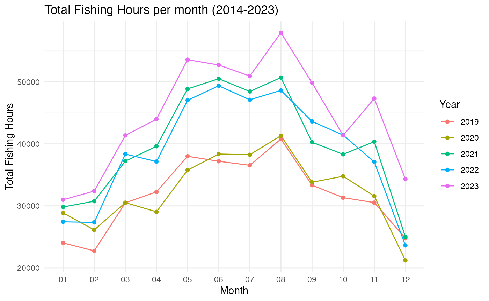

Global Fishing Watch R Package (gfwr)
The gfwr package provides convenient functions to pull
GFW data directly into R into usable formats. It contains three main
functions, including : get_vessel_info(),
get_event() and get_raster(). The two first
being devoted to retrieving information and features on one ore several
specific vessels. The last is of particular interest to us because it
allows us to gather information from global fishing watch raster on the
fishing effort (further details in the function appropriate section).
Here we mainly use the splnr_get_gfw function which has
been created to enable data to be retrieved and processed in a variety
of ways, some of which are described here.
The time spent fishing is computed using Automatic Identification System (AIS) data, which is transmitted by most industrial fishing vessels. The AIS data provides information on the location, speed, and direction of the vessel, which can be used to identify when the vessel is actively fishing.
AIS Caveats and limitations
The AIS coverage of vessels has several limitations such as:
1. The number of vessels that are captured (AIS provides approximately
70’000 of the 2.8 million identified fishing vessels).
2. The size of the vessels (52-85% for vessels larger than 24 meters
against 1% for vessels under 12 meters).
Good to know: IMO mandates AIS for most vessels larger than 36
meters.
3. AIS interference with each other in areas of high vessel
density.
4. Some terrestrial satellites only receive messages near shore.
API
To access GFW APIs, you need to :
1. register for a GFW account
here.
2. Request API key here.
Once you have your token, add it to your .Renviron file (by executing
the chunk below), by writing (GFW_TOKEN = “YOUR_TOKEN”) in the file.
(You could be asked to restart R for changes to take
effect.)
usethis::edit_r_environ()We save the key in an object that will be used in gfwr functions.
key <- gfwr::gfw_auth()Fishing effort visualization
A region_id is necessary to use the get_raster
function.
region_id <- gfwr::get_region_id(region_name = "Australia",
region_source = "eez",
key = gfwr::gfw_auth())$idThe get_raster function gets a raster of fishing effort
from the API and converts the response to a data frame which contains
occurrences for each vessel and for each grid cell (data is binned into
grid cells of different resolution), the Vessel IDs,
Flag, Geartype and
Apparent fishing Hours which are basically the amount of
fishing hours of each vessel per grid cell (geometry).
Data can be provided through :
- daily,
monthly and yearly temporal resolutions.
- low (0.1 deg) and high (0.01 deg) spatial
resolutions.
- vessel_id, flag,
gearType, flagAndGearType.
gfwr::get_raster(
spatial_resolution = "low",
temporal_resolution = "monthly",
group_by = "flagAndGearType",
date_range = "2022-01-01,2023-01-01",
region = region_id,
region_source = "eez",
key = gfwr::gfw_auth()
)(You can remove the option message = FALSE
to see the columns types.)
get_raster caveats and limitations.
Date range is limited to 1-year. Nevertheless, with some
modifications, we can get round these problems through
splnr_get_gfw.
data_sf_combined <- splnr_get_gfw(region = "Australia",
start_date = "2019-01-01",
end_date = "2023-12-31",
temp_res = "yearly",
spat_res = "low",
compress = FALSE)Visualization
To display the data, we load :
- The coastline from
rnaturalearth package and modify it to get an sf object,
and we constrain it to the boundaries of the given data.
- EEZ
Polygons from oceandatr package
# Check and modify if necessary the spatial reference of data_sf_combined
data_sf_combined <- sf::st_set_crs(data_sf_combined,
sf::st_crs(rnaturalearth::ne_coastline(scale = "large")))
coast_clipped <- rnaturalearth::ne_coastline(scale = "large") %>%
sf::st_as_sf() %>%
sf::st_intersection(sf::st_as_sfc(sf::st_bbox(data_sf_combined)))
# Load EEZ polygons
eezs <- oceandatr::get_area(area_name = "Australia") %>%
sf::st_transform(crs = sf::st_crs(data_sf_combined)) %>%
sf::st_make_valid() %>%
sf::st_intersection(sf::st_as_sfc(sf::st_bbox(data_sf_combined)))Here we display the Fishing Effort in Australia from 2019 to 2023.
Year-on-year comparison
We may need to compare different timeframes, such as seasons, to see
if there are any patterns.
Note : As more vessels
have adopted AIS (mainly in economically developed countries) since the
deployment of these technologies, the rise in activities must be seen in
the context of this increase and not necessarily of more intense fishing
activity.
# We need to change the temporal range according to our need group by it to display the total fishing hours. <br>
data_sf_combined <- splnr_get_gfw(region = "Australia",
start_date = "2019-01-01",
end_date = "2023-12-31",
temp_res = "monthly",
key = gfwr::gfw_auth()) %>%
dplyr::group_by(Year, Month) %>%
dplyr::summarize(Total_Fishing_Hours = sum(ApparentFishingHrs))
Fishing gear type
Here we display the Vessel activity in ‘Micronesia’ in 2020 according to the fishing gear type.
data_sf_combined <- splnr_get_gfw(region = "Micronesia",
start_date = "2019-12-31",
end_date = "2021-01-01",
temp_res = "monthly")
Supplementary materials.
The fishing detection model was trained on AIS data from 503 vessels and identified fishing activity with over 90% accuracy, which means that it can identify a fishing and non-fishing activity with high accuracy. More details on AIS operation and limitations here.
Hierarchy of vessels gear types :

Source : https://globalfishingwatch.org/datasets-and-code-vessel-identity/